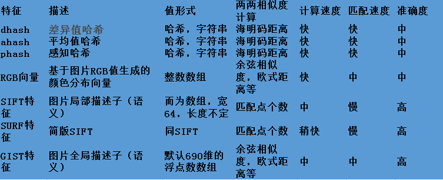

2008年TinEye上线了图片搜索，开始是注册制，后来逐步放开。2011年， Google也上线了相似图片搜索，通过用户上传的图片，可以搜索相似的图片。
参考文档中提供了一些介绍图像搜索的一些文章， 尤其是阮一峰2011年和2013年两篇普及性的文章，可以帮助你了解图像相似搜索的原理。
图像相似性搜索应用广泛、除了使用搜索引擎搜索类似图片外，像淘宝可以让顾客直接拍照搜索类似的商品信息、应用在商品购物上。也可以应用物体识别比如拍图识花等领域。目前我在调研图片鉴权的方案，通过一张图片和图片库中的图片进行比对，来确定这张图片是否侵权，或者退一步讲，图片库中是否包含和这张图片类似。 这个需求和目前深度学习应用中的图像识别还不一样， 图像识别是需要将图像中的物体识别出来， 猫啊狗啊什么的，而我所要做的就是一个查找相似图片的东西。
Neal Krawetz博士看到了一些关于TinEye原理的询问， 虽然他并不知道TinEye是怎么实现的，但是根据搜索结果，他判断是基于感知哈希算法(Perceptual hash algorithm)的变种，他于2011年5月写了一篇文章，介绍相关的技术。
背景知识
感知哈希算法根据图像的特征生成一个确定的指纹，这些指纹可以用来比较。指纹越接近，说明图片越接近。在文章中他介绍了一个非常简单的感知哈希算法， Average Hash algorithm，以美女Alyson Hannigan照片为例,计算指纹(hash)的步骤如下：

1、减小图像的尺寸
生成一个8 X 8的缩略图，一共64个像素。
2、编程灰度图像
这样就从64个像素(64 Red, 64 Green, 64 Blue)变为64中颜色。
3、计算颜色的平均值
4、计算64位中的每一位
简单和平均值比较，根据大小设置1和0
5、计算hash值
把这64bit赋值给一个64bit的整数，顺序是无关的，只要保持一致即可。
这样，这个图片的指纹就通过一个64位的整数表示出来了。图像放大缩小、旋转、对比度、饱和度的变换不会显著改变指纹。其实最大的好处就是快。
天下武功，无坚不摧，唯快不破
当你比较两张图片的时候，计算它们的hash值，然后再计算它们的汉明距离即可。
虽然平均散列是快速和容易的，但是photoshop的力量是无穷的，如果你对图片进行伽玛校正或者直方图的调整，对颜色进行非线性的改变，上述算法可能就不太准确了。
博士又介绍了pHash算法, 它扩展了Average Hash algorithm,使用DCT(离散余弦变换)减少图像的高频数据。
博士又动手写了一个工具，搜索了一批图片进行测试。研究发现， Average Hash非常快，在特定场景下是一个非常好的算法。
这篇文章非常值得你阅读，也引起了广泛的讨论，以及一些编程语言的实现。 博士在2013年又介绍了第三种算法：difference hash，准确性和aHash（Average Hash algorithm）查不多，但是更快。 aHash基于平均值，pHash基于图像频率，而dHash基于直方图。
阅读博士的文章的时候我在想，对于aHash, 分别计算RGB的指纹，用这三个指纹比较是不是会更好？
这里再介绍另外一种技术: SIFT，即尺度不变特征变换（Scale-invariant feature transform，SIFT），是用于图像处理领域的一种描述。这种描述具有尺度不变性，可在图像中检测出关键点，是一种局部特征描述子。 该方法于1999年由David Lowe首先发表于计算机视觉国际会议（International Conference on Computer Vision，ICCV），2004年再次经David Lowe整理完善后发表于International journal of computer vision（IJCV。截止2014年8月，该论文单篇被引次数达25000余次。SIFT在数字图像的特征描述方面当之无愧可称之为最红最火的一种，许多人对SIFT进行了改进，诞生了SIFT的一系列变种。SIFT已经申请了专利。
SIFT好是好，但是是有专利保护的，并且也慢。
这是雷经纬的整理的算法比较:

Go语言实践
以上是图片比对的背景知识，这一节我们介绍一个计算图像指纹，并且和对象进行比较的例子。
这次，我们使用的库是goimagehash,它实现了aHash、dHash、pHash算法， wHash正准备实现。
例子中我们使用的三张图片分别是：

分别使用三种算法，计算第一张图片和第二张、第三张图片的汉明距离。
|
|
执行结果:
|
|
可以看到，三种方法都能正确的识别出第一张和第二张图片是类似的(<= 6), 而和第三张图片的差别比较大。
对于这次测试，第二个图片我调整了一下饱和度，加了一个小小的水印。 而aHash表现最好。
对于简单的图像查重和相似图片的查找，使用这三种算法就可以了，要是你想根据一个人的正脸，去搜索这个人的侧脸图片，那可能就需要使用SIFT或者其他的算法了。
参考文档
- http://www.hackerfactor.com/blog/index.php?/archives/432-Looks-Like-It.html
- http://www.ruanyifeng.com/blog/2011/07/principle_of_similar_image_search.html
- http://www.ruanyifeng.com/blog/2013/03/similar_image_search_part_ii.html
- https://cloud.tencent.com/developer/article/1006121
- https://fullstackml.com/wavelet-image-hash-in-python-3504fdd282b5
- http://www.infoq.com/cn/articles/image-similarity-algorithm-on-mobile-client
- https://github.com/nivance/image-similarity
- https://www.cnblogs.com/wangyaning/p/7854046.html
- https://github.com/facebookresearch/faiss
- https://en.wikipedia.org/wiki/Perceptual_hashing
- https://www.zhihu.com/question/19606748
- https://baike.baidu.com/item/SIFT/1396275